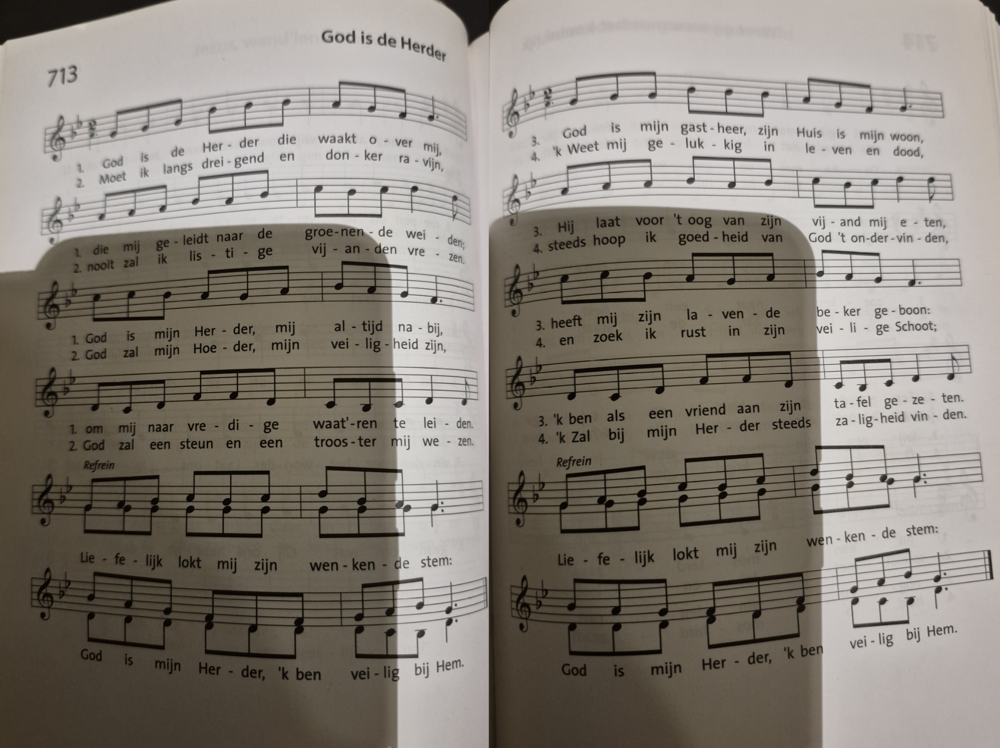
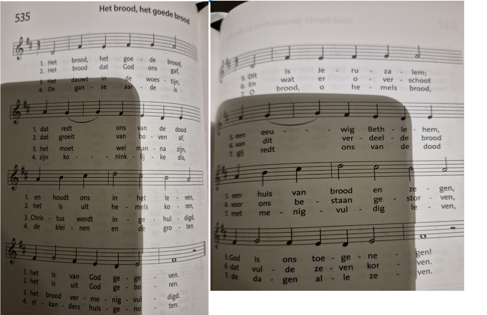
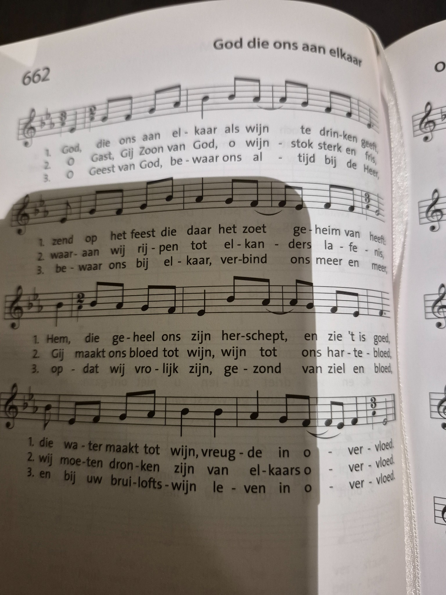
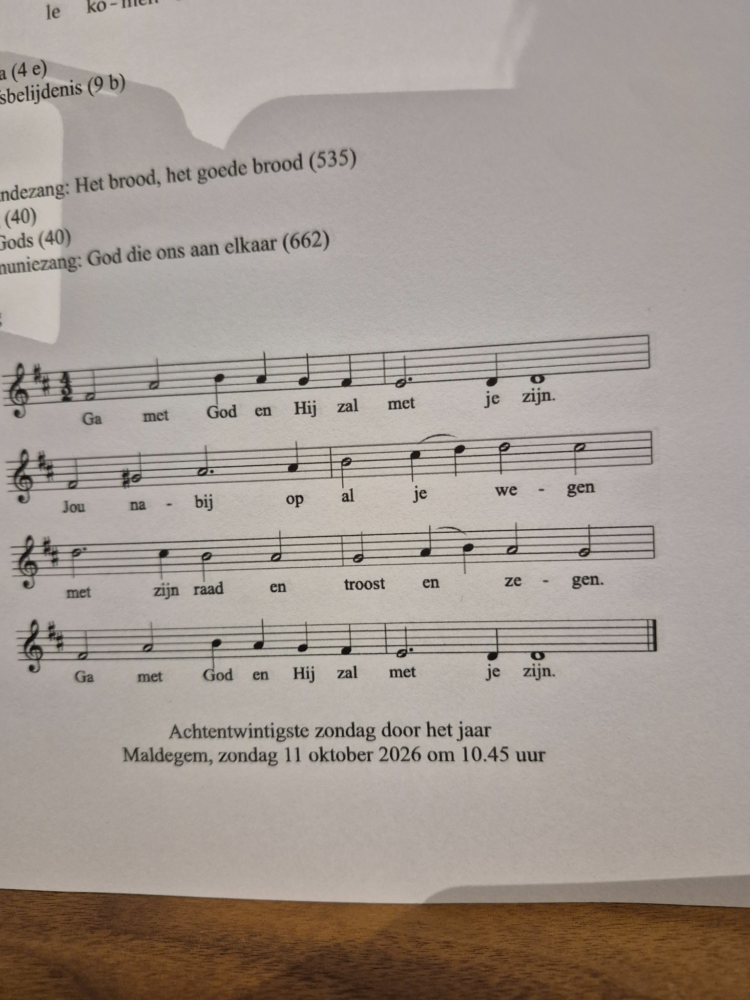

De zang van de eucharistie
28ste zondag door het jaar
Intredezang
ZJ 713 – God is de Herder

Offerandezang
ZJ 535 – Het brood, het goede brood

Communiezang
ZJ 662 – God die ons aan elkaar

Wegzending
LB 416 – Ga met God
